Découvrez tout ce que 7.Gaming vous propose pour vivre le jeu vidéo autrement !
Tous nos tournois, qu’il s’agisse du Tournoi Flash ou du Tournoi Prestige, suivent les mêmes principes pour garantir une expérience équitable et compétitive à chaque participant :
Pour toute question ou précision, consultez notre page de contact ou notre règlement complet.
Sur 7.Gaming, chaque joueur possède un classement évolutif basé sur ses victoires et défaites lors des tournois et défis.
Plus tu gagnes, plus tu montes dans les paliers !
Voici comment fonctionne notre système :
| Badge | Nom du palier |
|---|---|
| 🥉 | Bronze |
| 🥈 | Argent |
| 🥇 | Or |
| 💠 | Platine |
| 💎 | Diamant |
| 🔷 | Saphir |
| 🔴 | Rubis |
| 🟢 | Émeraude |
| ⚫ | Onyx |
| 👑 | Légende |
Ce système récompense la régularité, la progression et le fair-play. À toi de jouer pour atteindre le palier Légende et devenir l’un des meilleurs de la plateforme !
À chaque fois que tu montes d’un palier, tu débloques des avantages exclusifs :
Et ce n’est pas tout : d’autres surprises et avantages exclusifs pourront être ajoutés au fil du temps pour récompenser les joueurs les plus actifs et fidèles.
Reste connecté, de nouveaux privilèges pourraient bientôt faire leur apparition !
Pour plus d'informations, veuillez nous contacter via notre page de contact.